Tutorial
Using the Gallery
Helpful tools
To navigate the gallery, you may find the filters bar and menu bar helpful. To learn more about these features, go to Using the Filters and Using the Menu Bar.
To learn more about the files you can download, go to the Documentation page.
To learn more about sharing models with others, go to the Sharing Models.
Still have questions? Visit the FAQs page or contact us.
Viewing model details
On every model, there is a small magnifying glass icon on the top left. To learn more about one specific model, click on this magnifying glass and an informational panel will appear.
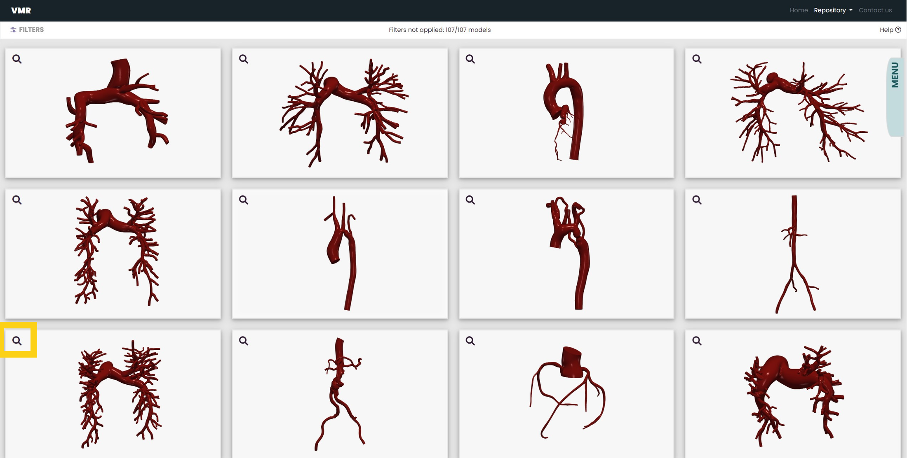 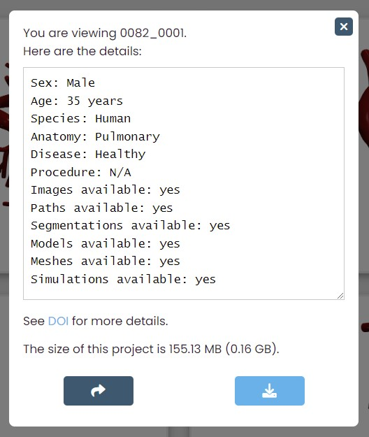The informational panel tells you the name of the model you are viewing, and below the name, are the details of the model you are viewing.
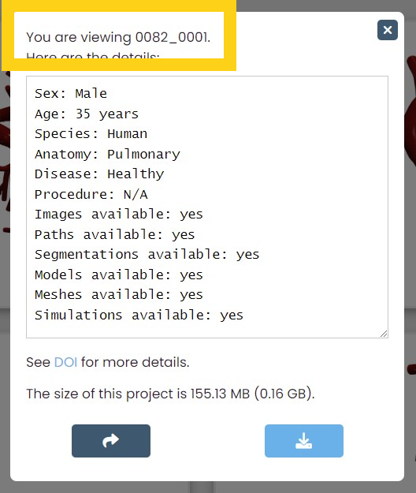
If there are additional notes for the model, they will be shown
under the details window. You are able to view the size of the
SimVascular Project .zip files as well.
You can download the files of the individual model you are viewing by clicking on the download icon.
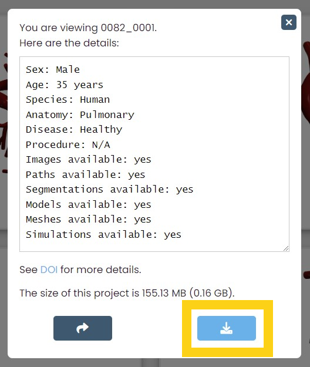 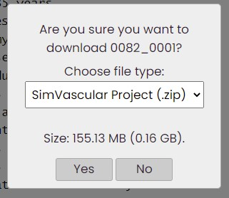If simulation results are avaliable for the model, you will be able to choose which file type you want to download. As you change the file type, the displayed size will update.
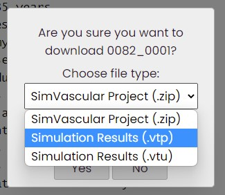 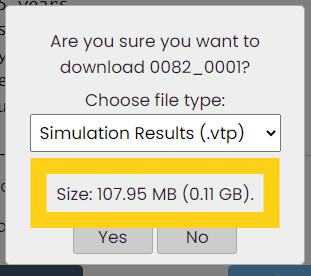You can also click on the share icon to copy a shareable link. To view how to use this link, go to sharing a model.
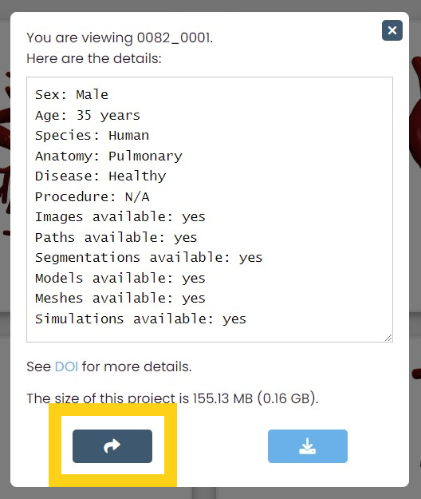To exit the informational panel, you can click anywhere outside the panel, or you can click on the close button located on the top right.
Selecting models
Instead of downloading or creating shareable links for individual models, you may want to work with multiple models at once.
To select and deselect a model to add it to or remove it from your collection of models, simply click or unclick on the model's image.
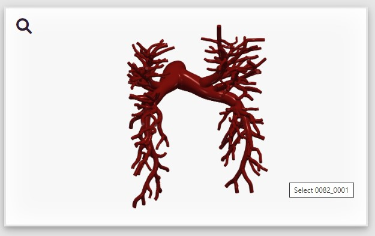 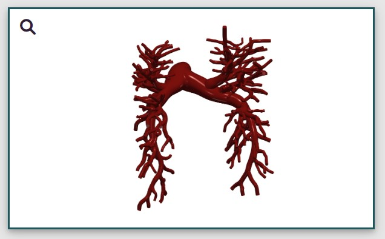The example above demonstrates where to click and what a selected model looks like.
You can also select multiple models at once with the Select All icon in the menu bar. For more information on this feature, go to The Select and Deselect All Icon.
To view the models you have selected, click on the View Selected icon in the menu bar. For more information on this feature, go to The View Selected Models Icon.
Once you have selected the models you want to download or share, either click on the Download All icon or the Get Shareable Link icon. For more information on these icons, go to The Download All Icon and The Share Icon.
Using the Filters
Opening the filter menu
To open the filter menu, find the word "FILTERS" on the top left of the page and click on it.

About the filter menu
The Error Message
If what you are looking for is too specific, an error message may appear. If so, it means the specific models you are searching for are not currently avaliable in our repository. You may need to enter in fewer specifications into the filter for models to appear in the gallery.


In the example above, an error message has appeared. This is because the Vascular Model Repository does not currently contain models that are of pulmonary arteries that have undergone the coronary artery bypass graft procedure.
The Clear All Button
If you want to return to the default state of the dataset gallery, click on the Clear All button. It will clear all of the filters that are currently applied.


The Collapse All Button
If you want to collapse all the filter menus, click on the Collapse All Button. It will do so. Clicking this button, however, will not clear the filters that are applied.


In the example above, the collapse all button has been pressed, which collapses all the filter headers. The filters remain applied.
Looking at the different categories
The Search Bar
With the search bar, you are able to search for specific models. To search for multiple characteristics, add a space between each characteristic. To apply the filter, write in an entry and hit the ENTER key.


In the example above, the models that are a result of the search bar entry are all male models of aortas that have aneurysms.
If you are looking for one specific model, you can search for the name of the model in the search bar.
The Simulation Results Filter
We have ran simulations for some of the models in this repository.
They come in .vtu and .vtp files. This
filter allows you to search for those models.

Above is what the default for the simulation results button is. In this state, no models are being filtered for simulation results.
To apply this filter, click on the mode you want to be in. If "MUST HAVE" is showing, you are filtering for the models that have simulation results. If "OPTIONAL" is showing, you are not filtering for simulation results.


In the example above, the models that are the result of clicking
the simulation results button have downloadable
.vtu and .vtp files.
The Age Filter
With the filter for age, you are able to search within an age range. The current minimum for the filter is 0 years of age, and the current maximum is 120 years.

Both the minimum and maximum bounds are inclusive. To apply the filter, hit the ENTER key.


In the example above, the models that are a result of the age filter entries are 5 years old.
The Drop-Down Menus
With the two drop down menus, you are able to search for models of a specific sex and species. To apply the filters, select the subcategory you are looking for.


In the example above, the models that are a result of the drop down menu entries are both female and human.
To deselect a drop down menu entry without clearing all applied filters, click on the "Select One" option.


The Checkboxes
With checkboxes under the three categories "Anatomy," "Disease," and "Procedure," you are able to search for models of a specific anatomy, disease, or surgical procedure.
To apply the filters, click or unclick a checkbox.


In the example above, the models that are a result of the checkbox entries are of aortas.
Some models check off more than one box per category. However, selecting more than one option under a category will return the union of those entries. To search for models that specifically have 2+ entries under one category, you will find the search bar to be more helpful.
Between categories (such as "Anatomy" and "Disease"), the checkboxes act as an intersection of the entries.


In the example above, the models that are a result of the checkbox entries are either of aortas with aneurysm(s) or of coronary arteries with aneurysm(s).
The Project Must Contain Filter
A few models do not contain certain files. With the Project Must Contain filter, you are able to filter through the models that have the files you are looking to download.
Unlike the filter above, these checkboxes act as intersections. To apply the filters, click or unclick a checkbox.


In the example above, the models that are a result of the project must contain entries all contain both "Paths" and "Simulations" file.
Summary
There are different ways to find what you are searching for in the Vascular Model Repository. If you are looking for a specific model, the search bar is the most effective. If you are looking for models in specific categories, the other forms of filters will be the most helpful.
Using the Menu Bar
Opening the Menu Bar
To open the menu bar, click on the horizontal MENU bar on the top-middle right of the screen.
 After opening the menu bar, you will see four different icons, each
with unique functions to help you navigate the Vascular Model
Repository's dataset. The functions of each of these icons are
described below.
After opening the menu bar, you will see four different icons, each
with unique functions to help you navigate the Vascular Model
Repository's dataset. The functions of each of these icons are
described below.
The Select and Deselect All Icon

By clicking and unclicking this icon, you are able to select and deselect all of the models that are showing in the gallery.

In the example above, by clicking the Select All icon, all the models in the repository have been selected.
When you are viewing the models you have selected, a place you can access by clicking on the View Selected Models icon, clicking the Select All icon will deselect all the models you have selected. A confirmation message will appear. By clicking "Yes," you are able to clear the models you have selected.


In the example to the left, one is viewing vertebral models they have selected. The example on the right demonstrates the confirmation message that will appear if you click on the Select All icon when viewing the models you have selected.
The View Selected Models Icon
After selecting models, you may want to view all the models you have selected before downloading their files. To do so, find the view selected models icon, the top right icon, in the menu bar and click on it.
The number on the icon is how many models you have selected.


Once you click on this icon, you can unclick it or apply new filters to return to the gallery.
When you are viewing the models you have selected, you can see how many you have selected on the top-middle of the screen.
 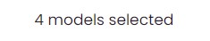
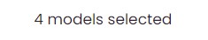
In the example above, one knows that they are viewing the four models they have selected.
In this page, by clicking the Select All icon, you can deselect all the models you have selected.
The Download All Icon
Once you are ready to download your models, click on the download icon in the menu bar.


When you click on the download icon, a window will appear. This message will ask for confirmation before downloading, as well as ask you to specify which file type you would like to download.
If you click on the drop down menu under "Choose file type:" you
are currently able to choose between downloading
.zip, .vtp, and .vtu files.
The .vtp and .vtu files are simulation
results we have ran for the models.


Not all models have simulation results. If you choose to download the files from our simulation results, the box will inform you how many of the models you have selected have simulation results to download.

In the example above, 2 out of the 3 models selected have simulation results to donwload.
The size displayed under the drop down menu changes dynamically with the file type you have chosen. It represents the total sizes of the models you have selected to download.

Once you are ready to download the models of the file type you have selected, click "Yes" and the files will begin downloading.
The Share Icon
If you have selected models and now want to share them with someone, click on the Get Shareable Link icon in the menu bar.

By clicking this icon, you can copy the link to a page that displays the model(s) you have selected.
To learn more about this share page, go to the description on how to Share Models.
Sharing Models
Sharing a model
How to get the link
There are two ways to get the link to share a model.
- The first way to get a link to share one model is by clicking on the share icon when viewing a model. To find how to view this informational panel, go to viewing model details. By clicking on this icon, you will copy the link to share the model. The link may look something like https://www.vascularmodel.com/share.html?NzlOWTI3Tg__.
- The other way to get a link to share one model is to click on the Get Shareable Link icon when you only have one model selected. 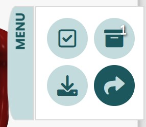 For more information about the Share icon, go to The Share Icon.
Viewing the shared model
When you enter the link you have copied into a browser, a descripton of the shared model will appear. The first displayed information about the model is its name and image.
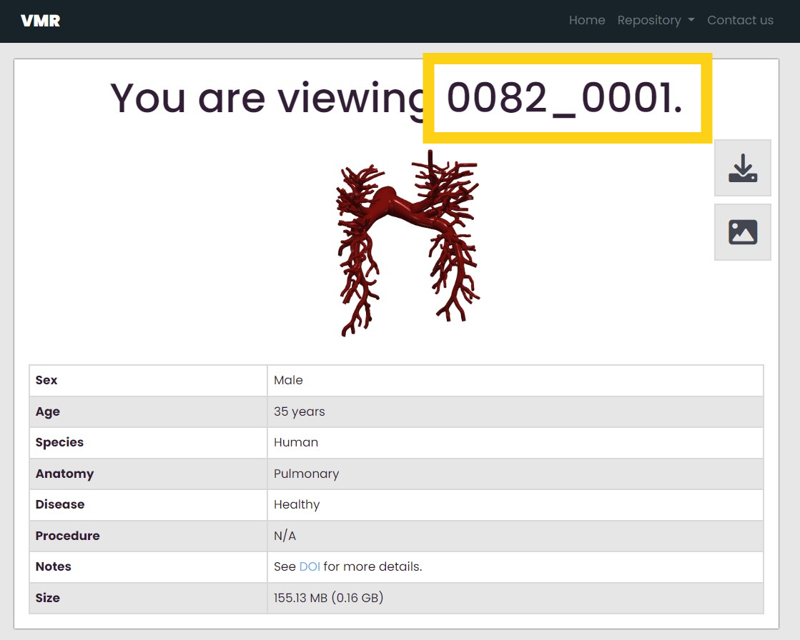 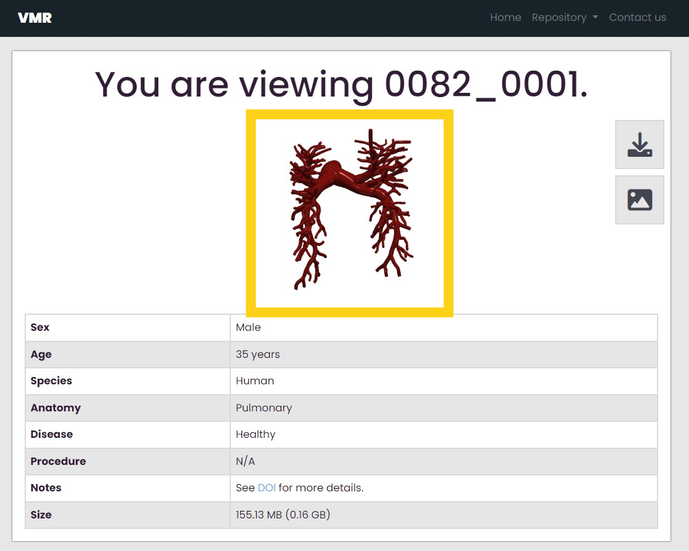In the example above, someone is viewing model 0082_0001.
Below the name and image is more information about the model.
Here, you can also know the size of the model's SimVascular
Project .zip files. If the model has additional notes
or links, they can also be found here.
When viewing this page, you can download the model's files by clicking on the download icon on the top right.
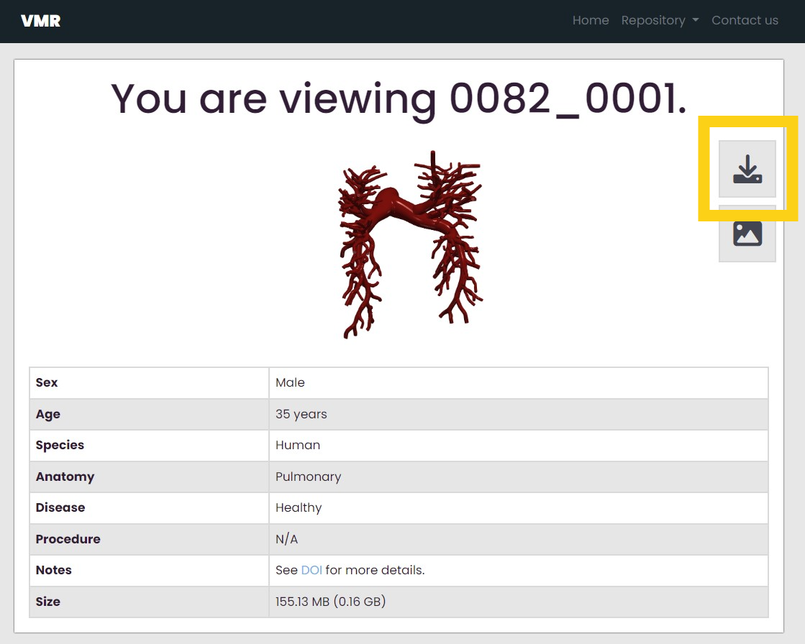 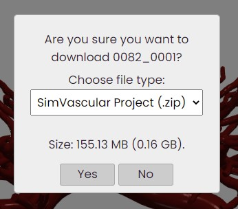If simulation results are avaliable for the model, the option will appear in the dropdown menu under "Choose file type:"
As you change the file type, you are able to see the size of the model files you are going to download under the dropdown menu.
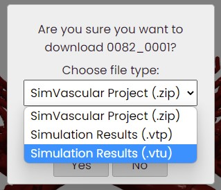 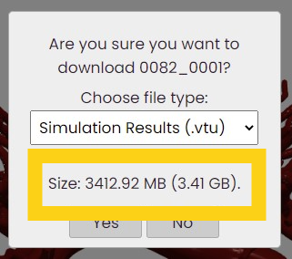Once you are ready to download, click the "Yes" button.
In addition to downloading the model files, you can also return to the dataset by clicking on the View Gallery icon under the download icon.

Sharing multiple models
How to get the link
To share multiple models, select the models you want to share and then click on the Select All icon in the menu bar.
For more information about the Select icon, go to The Select and Deselect All Icon.
Viewing the shared models
When you create a link to share multiple models, you can then view your selected models in a table.
Three functions are avaliable on this page. You can see how many models you are viewing and view a brief summary of each model.
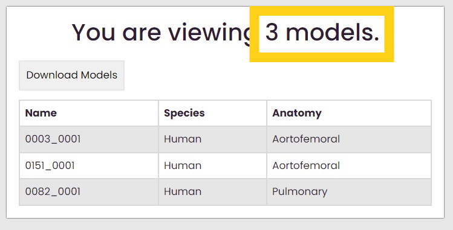 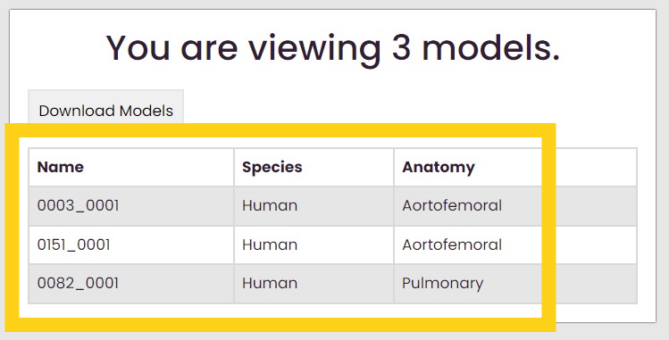Above is an example of what this page might look like. In this case, someone has shared 107 models.
You can also download all of the files of the models by clicking on the download button. Upon clicking download, a message will appear.
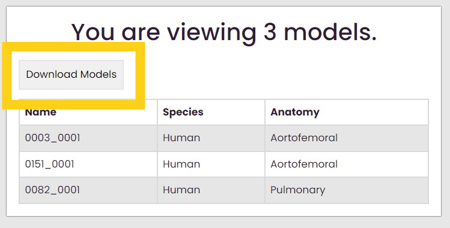 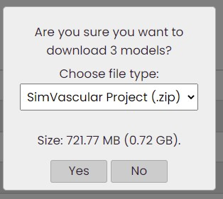If some of the models you have selected have simulation results, the drop down menu under "Choose file type:" will allow you to specify the file type.
A message will let you know if some of the models you want to download simulation result files for do not have simulation results.
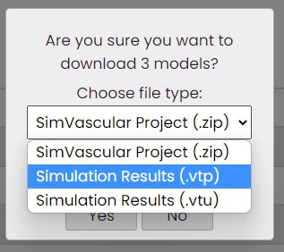 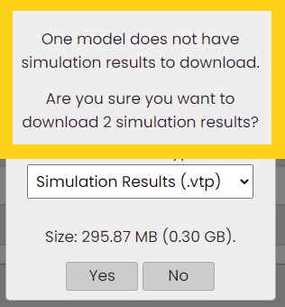Before downloading model files, you can see the size of the download specified below the drop down menu.
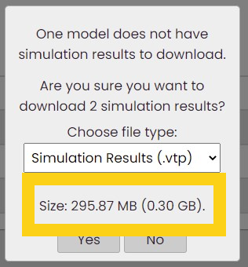To view models individually, click on the model's row, and a new page will open viewing the individual model.
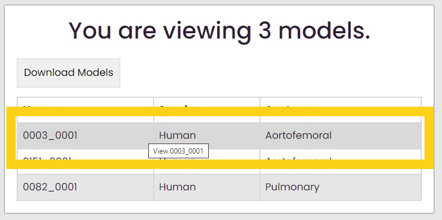 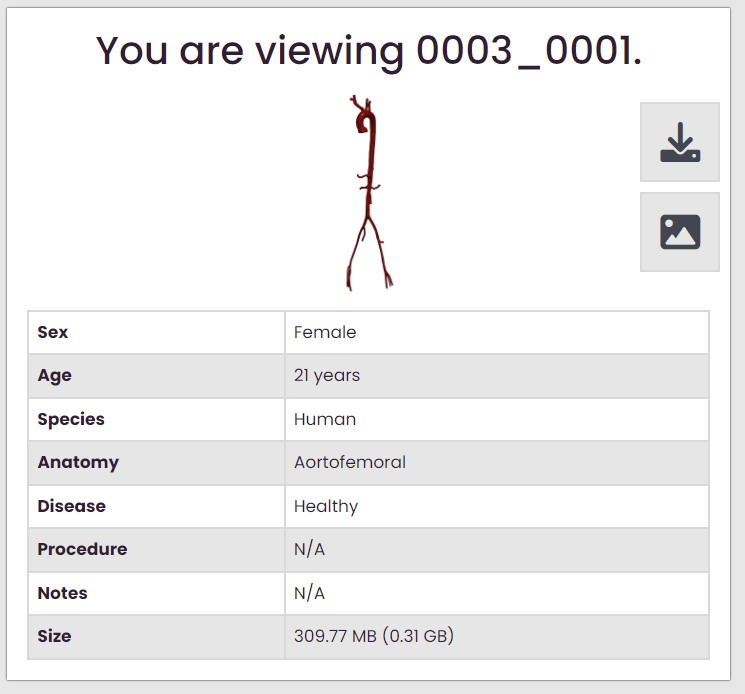For more information about viewing this page, go to viewing the shared model.